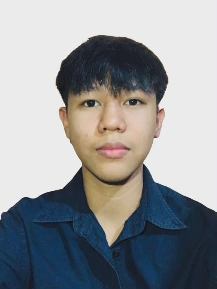
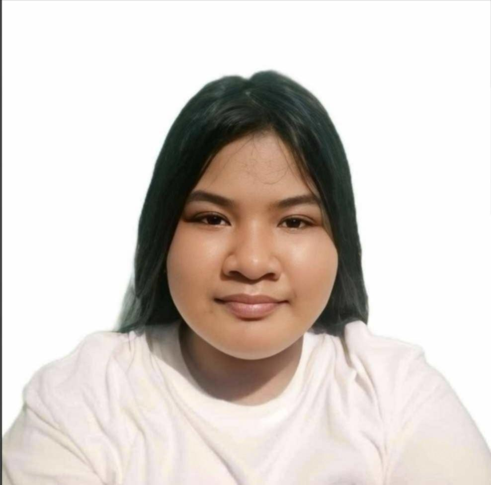
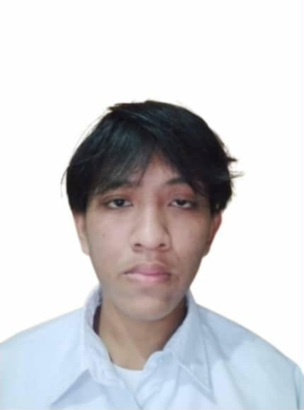
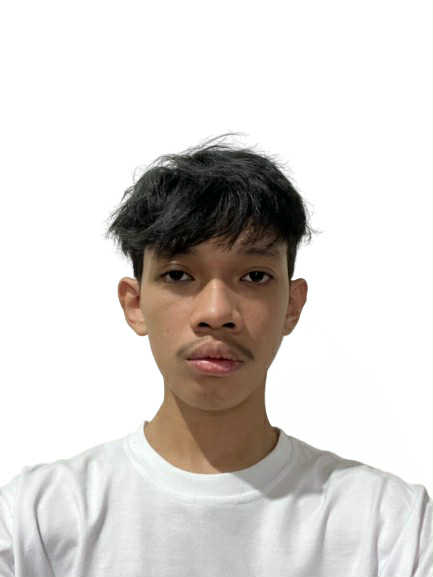
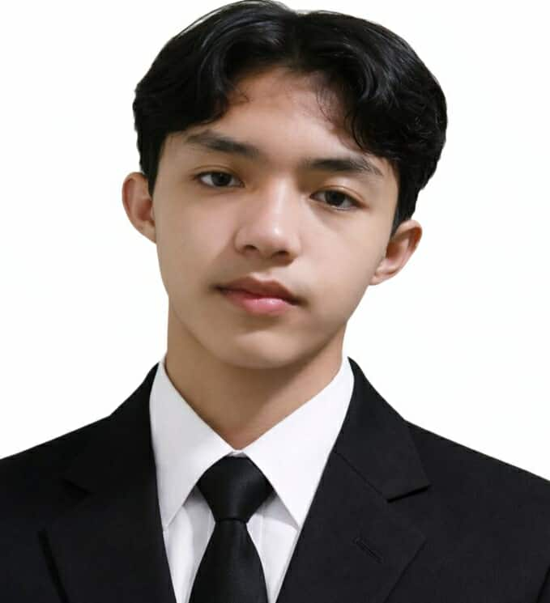

1. BERNABE, MICHAEL C.
Good day, I’m Michael C. Bernabe, a student at Arellano University – Andres Bonifacio Campus, currently taking up Bachelor of Science in Information Technology as a 1st-year college student. I am of legal age. My dream is to become a web and graphic designer someday.
I am the lead designer of this website, and our goal is to provide travelers with clear, accurate, and helpful information about the destinations they want to visit in Palawan. We aim to guide and inspire people who are planning to explore this beautiful place.
Lastly, we hope to promote and share how wonderful Palawan is, showcasing its natural beauty and helping more people discover what it has to offer here in the Philippines.

2. Agustin, Chiara Minh S.
My name is Chiara Minh S. Agustin, and I am a BSIT student currently schooling at Arellano University. I am a slow learner, but I do try to keep up with web design lessons, as I actually have an interest in designing but haven't quite gotten too good at doing that yet. I did the Honda Bay and Tabon Cave webpages that showcase images, tips, and activities to persuade readers to want to go to these beautiful locations that are located in Palawan. My hobbies are reading, drawing, and playing games.

3. SISON, JAY LAWRENCE E.
My name is Jay Lawrence Sison, and I’m a 20 years-old student from Arellano University. My dream is to become an IT professional, and I’m passionate about technology and how it can make a positive impact. My goal for this website is to provide people with valuable information about Palawan, so they can appreciate its beauty and unique attractions. By sharing insights and tips, I hope to inspire others to visit this incredible destination and experience its breathtaking landscapes, rich culture, and unforgettable adventures. I'm excited to contribute by creating content that helps people discover the best of Palawan.

4. ORDAS, KEN REYVEN S.
My name is Ken Reyven Ordas, an 18 year old student from Arellano University. My dream is to become a successful person in life and in my chosen career, building a future through hard work, dedication, and the skills I continue to develop along the way.
For this website, my goal is to create an informative and visually appealing travel blog about Palawan that showcases the beauty of each destination, helping viewers discover and appreciate the best places the island has to offer. My part in this project covers two of the most breathtaking destinations in Palawan Hidden Beach in El Nido, a secret cove accessible only through a narrow limestone crevice, and Tubbataha Reefs Natural Park, a world class UNESCO marine sanctuary in the remote Sulu Sea.

5. Buita, Riel Jan M.
Hello I'm Riel Jan Buita and im 19 years old. I currently studying at Arellano University Bonifacio Campus in Pasig. Our website aims to showcase the beauty and unique experiences offered by some of the most stunning beaches in Palawan, particularly those found in El Nido and Puerto Princesa. The goal of this platform is to inform, inspire, and guide travelers by providing engaging, accurate, and visually appealing content about these destinations.
Through this website, we want to highlight not only the natural beauty of these beaches but also the activities, travel tips, and experiences that visitors can enjoy. My contribution to this website focuses on presenting detailed and engaging information about the overall web content and specifically highlighting two beautiful destinations such as Duli Beach in El Nido and Nagtabon Beach in Puerto Princesa. My goal was to make the content not only educational but also engaging enough to attract potential visitors and encourage them to explore these destinations.